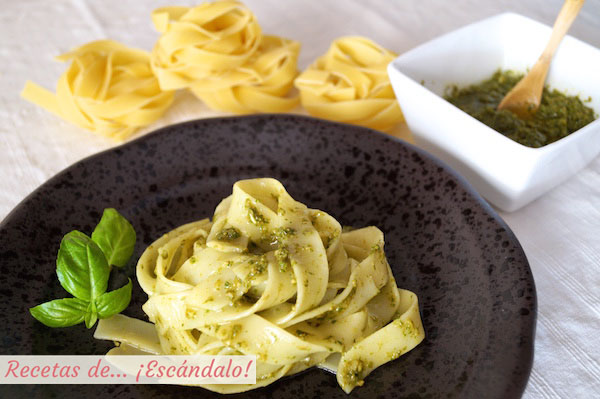

Pasta Tagliatelle con Pesto

Ingredientes
- 50 gr de hojas de albahaca fresca.
- 1/2 diente de ajo.
- 20 gr de piñones.
- 10 gr de perejil fresco.
- 1/2 cucharadita de sal gorda.
- 20 gr de queso Parmesano o Grana Padano en bloque (nosotros hemos utilizado éste último).
- 25 cl de aceite de oliva virgen extra.
- 300 gr de Tagliatelle (os recomendamos los de Pastas Romero).
- Sal.
Preparación, cómo hacer pasta tagliatelle con salsa pesto casera y fácil:
- Prepara la salsa pesto casera. Nuestra recomendación es que la tengas lista al menos desde el día anterior para que se mezclen bien los sabores, aunque si la vas a preparar el mismo día también te va a quedar riquísima.
- Aunque se puede utilizar un mortero, tu brazo se va a resentir bastante. Te recomendamos una batidora o picadora eléctrica, la tendrás lista en poquísimos minutos
- Lava las hojas de albahaca, sécalas y ponlas en la picadora, y haz lo mismo con las hojas de perejil. Tritura durante unos pocos segundos hasta que quede triturada. Verás que, como estamos elaborando poca cantidad, algunas hojas pueden quedar pegadas a las paredes y sin triturar, por lo que con una cuchara puedes ir moviendo lo que se queda en las paredes para que se triture con el resto.
- Ahora pon el ajo y tritura de nuevo.
- Pon los piñones y la sal, y vuelve a triturar.
- Haz lo mismo con el queso y procura que quede todo bien triturado. La pasta obtenida se parecerá a un paté, ligeramente grumosa pero con los ingredientes bien mezclados.
- Retira a un cuenco e incorpora el aceite y mezcla con ayuda de una cuchara. Deja reposar idealmente desde al menos el día anterior, pero si no es posible, al menos el tiempo que tarda la pasta en cocerse será suficiente para obtener un buen resultado.
- Ahora vamos a preparar los tagliatelle: pon abundante agua en una olla (que después cubra de sobra la pasta) a fuego fuerte hasta que hierva. Cuando hierva, incorpora una cucharadita de sal y la pasta, y cuando vuelva e hervir, deja que se cueza durante los minutos que indique el paquete (en este caso son 8).
- Cuando se cumpla el tiempo, escúrrelos y rápidamente sin dejar que se enfríen ponlos en un bol grande, vierte la salsa pesto por encima y mezcla bien, para que la pasta se impregne con la salsa.